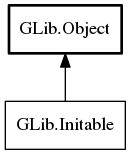

Initable
Object Hierarchy:
Description:
Initable is implemented by objects that can fail during initialization.
If an object implements this interface then it must be initialized as the first thing after construction, either via init or init_async (the latter is only available if it also implements AsyncInitable ).
If the object is not initialized, or initialization returns with an error, then all operations on the object except @ref and unref are considered to be invalid, and have undefined behaviour. They will often fail with critical or warning , but this must not be relied on.
Users of objects implementing this are not intended to use the interface method directly, instead it will be used automatically in
various ways. For C applications you generally just call @new directly, or
indirectly via a foo_thing_new wrapper. This will call init
under the cover, returning null and setting a
Error on failure (at which point the instance is unreferenced).
For bindings in languages where the native constructor supports exceptions the binding could check for objects implemention ginitable during normal construction and automatically initialize them, throwing an exception on failure.
All known implementing classes:

All known sub-interfaces:
Namespace: GLib
Package: gio-2.0
Content:
Static methods:
Methods:
Inherited Members:
All known members inherited from class GLib.Object